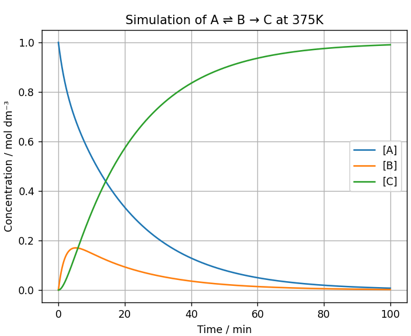
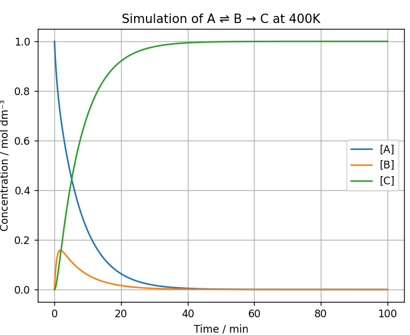
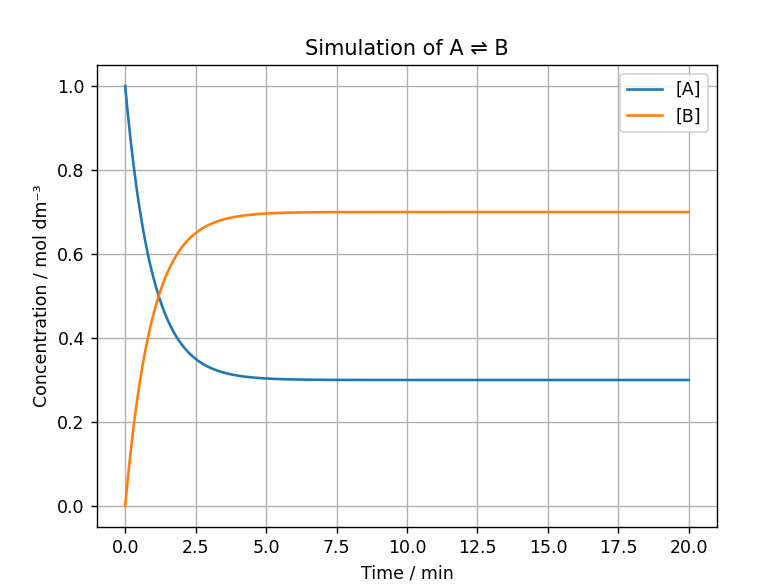
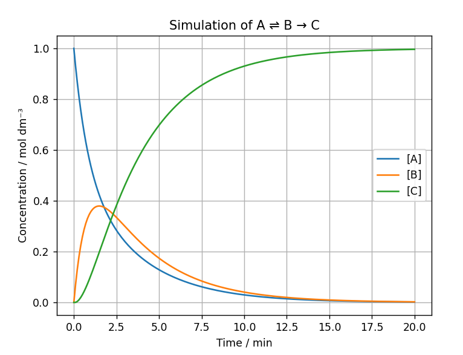

For the reaction A⇌B, as shown in the graph, it can be observed that the concentration of both chemical species changes rapidly at the beginning of the reaction and then the gradient becomes less steep as the rate of reaction slows over time. The initial concentration of chemical species A is at a maximum; however, as the reaction progresses it decreases as it is converted into chemical species B. Initially, the concentration of B is at 0moldm-3; however, it continuously rises as the reaction progresses until it reaches a maximum and levels off as dynamic equilibrium is reached.
The first hypothesis in the project states “For a reversible reaction, the concentrations of reactants and products will change over time until dynamic equilibrium is reached, at which point the concentrations remain constant.” Simulation 1 demonstrated that the system approached equilibrium as predicted. Equilibrium is reached at around 20 minutes in the graph, shown below, generated by the Python simulation and at this point, both the concentrations of A and B become constant. At dynamic equilibrium the forward and reverse rates of reaction are equal however they cannot be observed from the graph. Instead, the fixed concentrations suggest that they have become equal.

Simulation 2 replicates the behaviour of a reversible reaction with an irreversible step: A⇌B→C. In this reaction, B acts as an intermediate as it is first produced and then fully used up to create C. The concentration of B reaches a maximum because it’s initially formed faster than it is consumed. As the concentration increases, there are more molecules available and more successful collisions so the rate of formation of C increases as the concentration of B increases. Unlike in simulation 1, true dynamic equilibrium is never reached due to the irreversible step. Although A and B are reversible, B is an intermediate and is consumed in the production of C. C cannot be converted back into B therefore B is continually removed from the reversible part of the equation, preventing the forward and reverse rates from becoming equal, whereas C is increasing continuously as can be seen in the graph.
The second hypothesis of this project states “Introducing an irreversible reaction step into a reversible system will continuously remove intermediate species, causing a greater proportion of reactants to be converted into products”. This hypothesis has been proven by simulation 2. In this simulation, the concentration of B increases then decreases as it is converted to C whereas in simulation 1 the concentration increases before becoming constant. This supports the theory that introducing an irreversible step prevents the system from reaching dynamic equilibrium as the intermediate, B, is constantly removed therefore disturbing the equilibrium between A and B. On the graph generated by the simulation, it can be seen that by the end the concentration of both A and B has decreased to approximately 0moldm-3 whereas the concentration of C is at a maximum. This supports the hypothesis as the overall formation of the product has increased.

Simulation 3 introduces Arrhenius equation which allows for the effect of temperature to be determined. Simulation 3 was run 3 times at different temperatures while all other variables remained constant: 350K, 375K, 400K. This was to ensure that any differences observed in the graphs generated were due to the change in temperature.
At 350K, the reaction progressed at the slowest rate out of the temperatures investigated. The concentration of A decreased gradually overtime as it was being converted into B. The concentration of B rose initially before reaching a maximum concentration just before the 20 minute mark and then decreased as it was being consumed in the formation of C. The concentration of C increased at a reasonably stable rate. The graph displayed only goes up to 100 minutes and by the end of the simulation, the reaction is still not complete as the concentration of A and B has not reached 0moldm-3 and C is still increasing which suggests a slow rate of reaction.
Increasing the temperature to 375K resulted in the concentrations changing more rapidly. The concentration of A decreased more rapidly and B reached a maximum concentration before the 10 minute mark, whereas at 350K it took almost 20 minutes. As a consequence, the concentration of C increased more rapidly and the final concentration of C was higher than at 350K. As well as that, at this temperature the rate of formation of C is not stable throughout the whole simulation as it increases and then starts to level off.
Further increasing the temperature to 400K produced the fastest reaction. The gradients of all of the curves have become noticeably steeper suggesting that the rate of change of concentration has increased and the reaction progressed quicker. At this temperature, the reaction goes to completion as A and B have been entirely converted into C at around the 50th minute. In addition, the concentration of C is the highest at this temperature and has been achieved in a shorter amount of time.
The last hypothesis states “Increasing temperature increases reaction rates according to the Arrhenius equation, causing the reaction to reach completion more quickly”. This simulation supports the hypothesis as at 350K the concentration of C was still rapidly increasing after 100 minutes, whereas at 375K it started levelling off. The reaction at 400K was the only one to go to completion with the concentrations of A and B reaching 0moldm-3 around the 50th minute. Additionally, the final concentration of C was around 0.75moldm-3 at 350K, 0.99moldm-3 at 375K and 1.0moldm -3 at 400K. Overall, this behaviour is consistent with Arrhenius equation.


The simulations gradually increase in complexity and realism. Simulation 1 was the most simple and established a base for the next two simulations as it imitated a simple reversible reaction, showing how dynamic equilibrium is reached. Simulation 2 expanded on this by adding an irreversible step which resulted in B becoming an intermediate. This allowed for the investigation of the behaviour of intermediate species in a reaction and how it prevents dynamic equilibrium from being reached. Simulation 3 included temperature dependence through Arrhenius equation, demonstrating that increasing the temperature leads to an increased rate of reaction. Overall, with each simulation the model became a little more detailed and provided a more realistic reaction system.